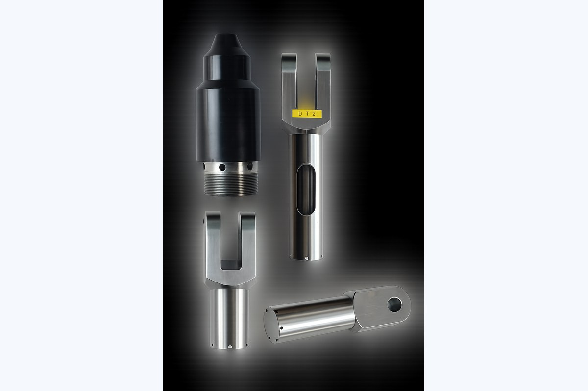
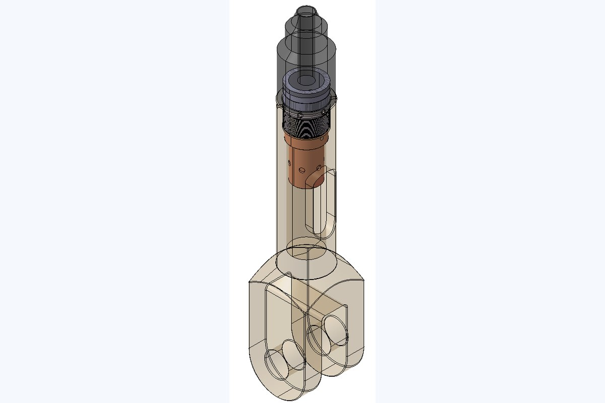
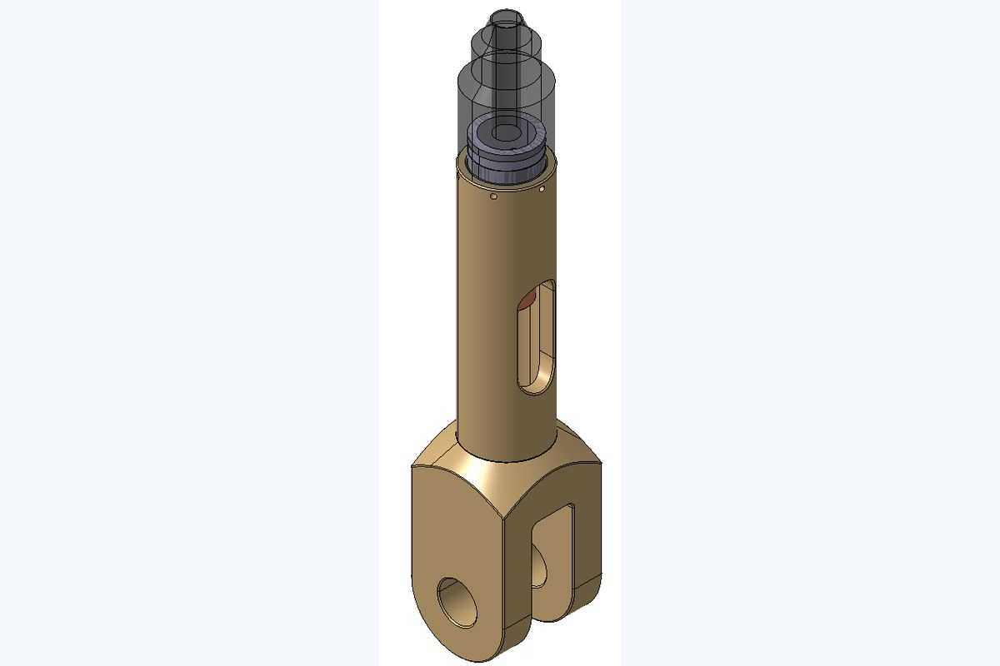
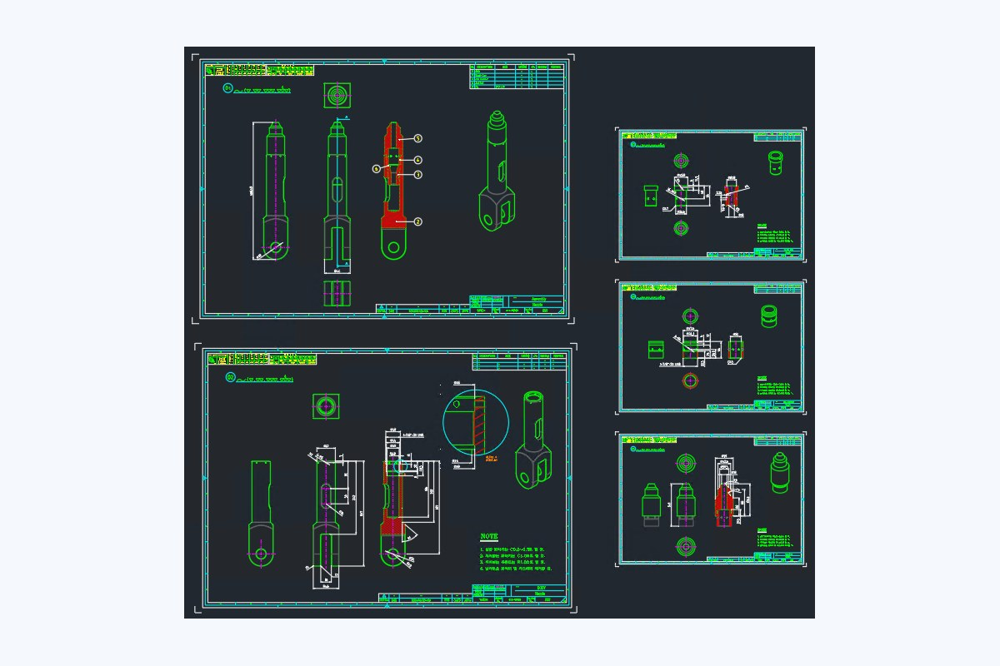

금속 노즐 부품 역설계
3D 스캔과 실측을 병행한 형상 복원 및 도면화
역설계3D스캔2D도면화
프로젝트 개요
약 500mm 길이의 광택 금속 노즐 부품을 3D 스캔과 실측을 병행하여 역설계한 프로젝트입니다. 형상 모델링과 상호 조립 관계 구현을 통해 본래 기능을 재현하고, 2D 제품도면까지 작성했습니다.
수행 내용
- 노즐 부품의 3D 스캔 및 실측 기반 역설계
- 광택 금속과 우레탄 계열 끝단부를 고려한 형상 모델링
- 상호 조립 관계 구현 및 기능 재현
- 2D 제품도면 작성 및 납품
Project Images
대표 이미지
보안상 세부 치수와 고객사 식별 정보는 제외하고, 포트폴리오용으로 일반화하여 표시합니다.



